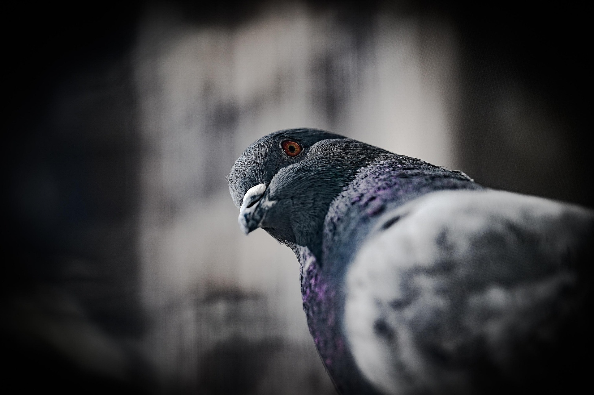

A certificação de metodologias que nos auxiliam a lidar com o desenvolvimento contínuo de distintas formas de atuação obstaculiza a apreciação da importância do processo de comunicação como um todo.
sla mano, qlqr coisa só pra teste

home


A certificação de metodologias que nos auxiliam a lidar com o desenvolvimento contínuo de distintas formas de atuação obstaculiza a apreciação da importância do processo de comunicação como um todo.
sla mano, qlqr coisa só pra teste